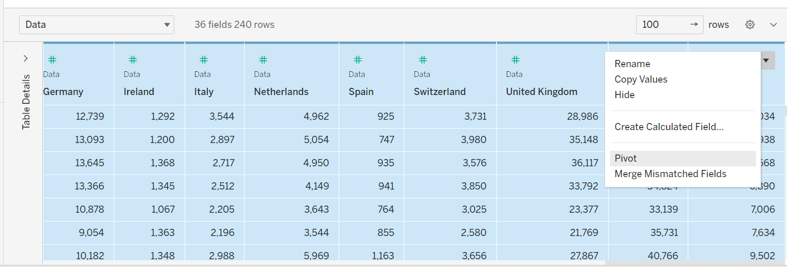
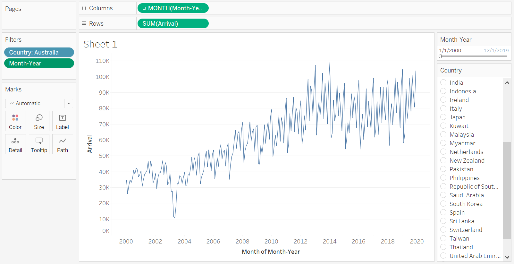
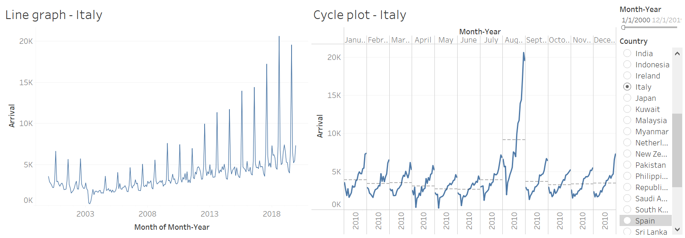
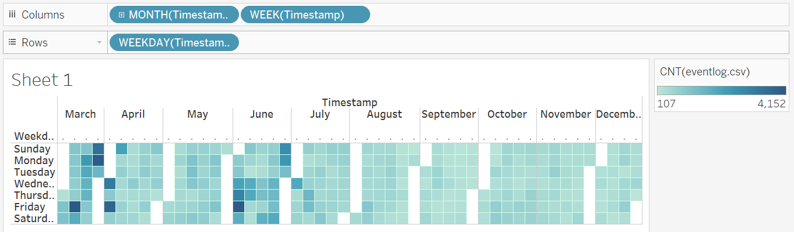
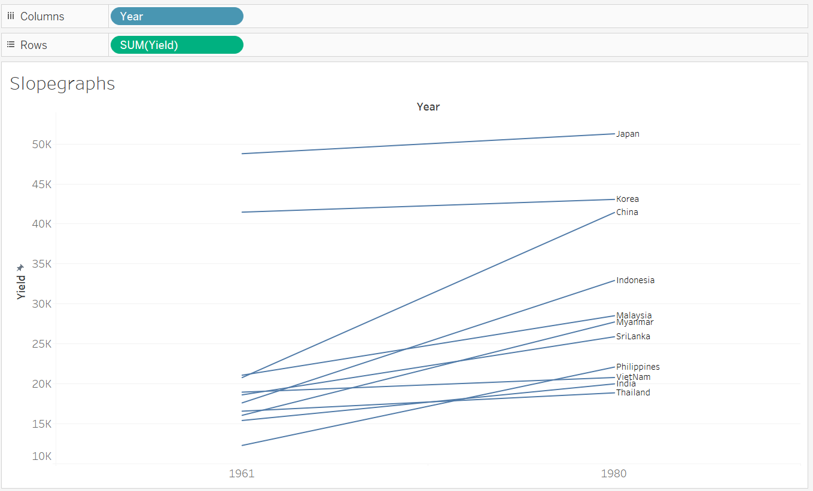
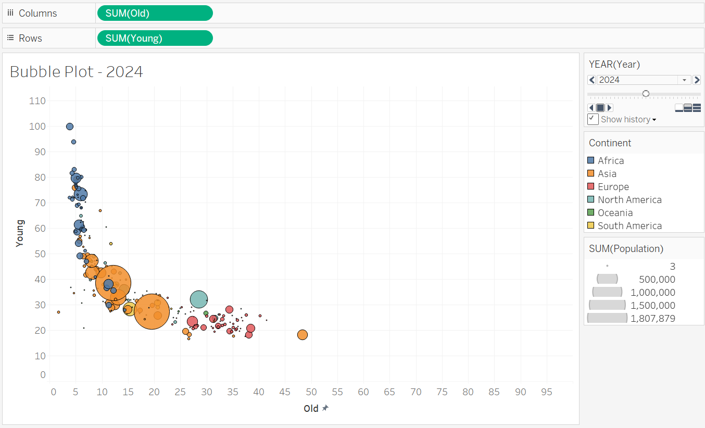

Overview
In this take home exercise, we will learn ways to visualize time series data in Tableau.
Section 1
i. Dataset used
“Arrival by Air” can be obtained from Singapore Tourism Board.
ii. Pivot (longer)
The original dataset is organized with each country as a column, which is not very useful when building visualization. Hence, we pivot the table to convert the country columns into rows.

iiI. Building a simple line chart by country
We can easily create a line chart in Tableau with country and date as filters to show time-series pattern. 
iV. Visualising cyclical patterns using cycle plot
The purpose of this is for viewers to visualise the trend more easily.

From the line chart on the left, we can clearly see that tourist number from Italy is the highest in the month of August. And from the cycle plot, we see that for the month of August, the number of tourists from Italy increases sharply over years.
The interactive dashboard can be found on Tableau
Section 3
i. Dataset used
“eventlog.csv” can be obtained from Github
ii. Plotting a calendar heatmap

From the heatmap, we can clearly see that the boxes are darker in color for certain dates, which represents more events on those dates.
The interactive dashboard can be found on Tableau
Section 4
i. Dataset used
“rice.csv” can be obtained from Github
ii. Plotting a slopegraph

The interactive dashboard can be found on Tableau
Section 5
i. Dataset used
“GlobalPopulation.xls” can be obtained from Github
ii. Plotting a bubbleplot

This chart is animated to showcase the changes of young and old population over years. Viewers can also select a country (represented by one bubble) to see the history train of how the demographic has changed over years.
The interactive dashboard can be found on Tableau